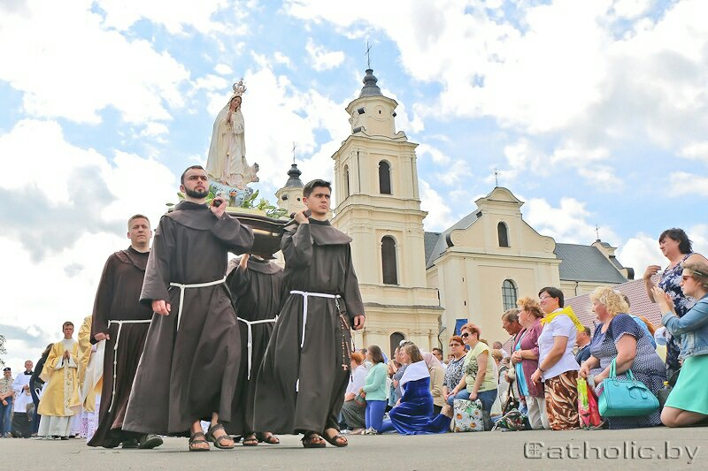

Будслаў
 2-га ліпеня 1588 года распачынаецца гісторыя слаўнай Буды, месца пасялення манахаў-бернардынаў, куды яны прыехалі з Вільні, каб нарыхтоўваць лес на патрэбу Віленскага кляштару і сплаўляць яго па рэках Сэрвач і Вілія. Гэта месца адзначылася цудоўным аб’яўленнем Найсвяцейшай Панны Марыі. Аб’яўленняў было шмат (прыватных), але мы будзем распавядаць пра адно, галоўнае, ад якога і пачаў пашырацца на нашых землях культ Будслаўскай Багародзіцы.Яшчэ да з’яўлення у Будславе ліку Божай Маці, якую пазней пачалі называць Будслаўскай, адбыўся адзін выпадак. Пасля абраду Святога Хросту, сабраны народ і браты-бернардыны, убачылі незвычайнае святло, якое лілося з неба і асвятляла дамы і капліцу.
Напалоханыя гэтым, усе прысутныя на богаслужэнні кініліся клікаць сваіх родных, заахвочываючы іх выйсці са сваіх дамоў і убачыць з’зянне над капліцай і ўсёй мясцовасцю. Манахі, якія бачылі гэтую з’яву сваіма вачыма, адразу ж выправіліся ў Вільню і паведамілі аб гэтым айцу гвардыяну з просьбай прыехаць і правесці даследванне. Калі ён прыехаў у Буду з іншымі айцамі, той пастанавіў для ўсіх двухдзённы пост і штодзённую катэхезу, просячы ўсіх маліцца, каб сам Бог у Сваёй моцы, міласэрднасці і любові дапамог зразумець, што азначае гэта святло, пасланае з неба на капліцу і келлі манахаў.
Калі пост скончыўся, то пасля ранішняй святой Імшы і малітвы з’явілася воблачка, з якога зной выпраменьвалася святло, якое ахінула капліцу і келлі. У гэтым воблаку аб’явілася ў невымоўнай хвале Найсвяцейшая Панна Марыя, атуленая анёламі. На руках яна трымала Немаўля Езуса, а з неба пачуўся голас: “З гэтага часу хвала Бога нашага і Сына Майго і Мая абарона будуць дадзеныя вам назаўсёды, гэтае месца я абрала пастаянным прытулкам для грэшнікаў”.
Усе напоўненыя вялікай духоўнай радасцю, схіліліся на калені, склалі малітвы і падзякі Пану Богу і Яго Найсвяцейшай Маці.
Пасля таго часу, з 1588 году месца гэта і стала крыніцай Божых ласкаў, аздараўленняў і шматлікіх цудаў.
Як кажуць, адбылося гэта 2-га ліпеня. Зтаго часу, гэты дзень і стаў галоўным Будслаўскім святам. Вось ужо многія стагодзі Будслаўскі фэст на 2-е ліпеня збірае дзесяткі тысяч пілігрымаў з беларускай зямлі ды і не толькі.
Сувязь:
- +375-29-246-62-97 (МТС)
- +375-25-618-1750 (life)
- +375-29-246-62-98 (МТС)
- +375-25-786-08-99 (life)